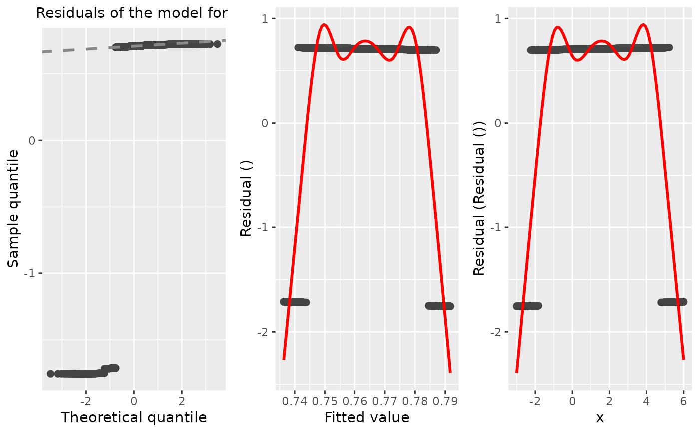
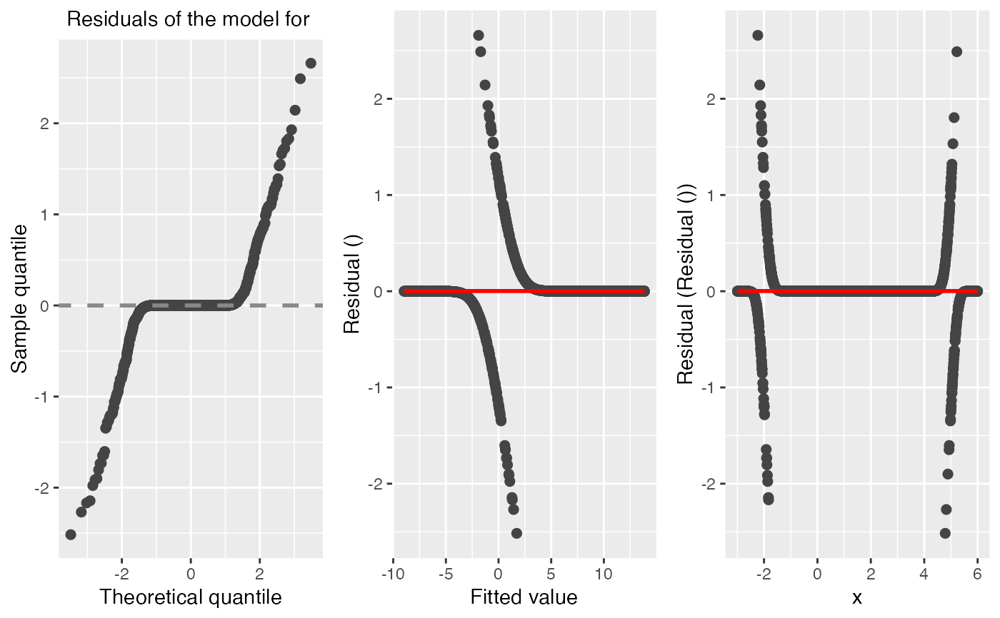

A generic function to simulate surrogate residuals for cumulative link regression models using the latent method described in Liu and Zhang (2017).
It also support the sign-based residuals (Li and Shepherd, 2010), generalized residuals (Franses and Paap, 2001), and deviance residuals for cumulative link regression models.
Usage
# S3 method for clm
residuals(
object,
type = c("surrogate", "sign", "general", "deviance"),
jitter = c("latent", "uniform"),
jitter.uniform.scale = c("probability", "response"),
nsim = 1L,
...
)
# S3 method for ord
residuals(
object,
type = c("surrogate", "sign", "general", "deviance", "pearson", "working", "response",
"partial"),
jitter = c("latent", "uniform"),
jitter.uniform.scale = c("probability", "response"),
nsim = 1L,
...
)
# S3 method for lrm
residuals(
object,
type = c("surrogate", "sign", "general", "deviance"),
jitter = c("latent", "uniform"),
jitter.uniform.scale = c("probability", "response"),
nsim = 1L,
...
)
# S3 method for orm
residuals(
object,
type = c("surrogate", "sign", "general", "deviance"),
jitter = c("latent", "uniform"),
jitter.uniform.scale = c("probability", "response"),
nsim = 1L,
...
)
# S3 method for polr
residuals(
object,
type = c("surrogate", "sign", "general", "deviance"),
jitter = c("latent", "uniform"),
jitter.uniform.scale = c("probability", "response"),
nsim = 1L,
...
)
# S3 method for glm
residuals(
object,
type = c("surrogate", "sign", "general", "deviance", "pearson", "working", "response",
"partial"),
jitter = c("latent", "uniform"),
jitter.uniform.scale = c("probability", "response"),
nsim = 1L,
...
)
# S4 method for vglm
residuals(
object,
type = c("surrogate", "sign", "general", "deviance"),
jitter = c("latent", "uniform"),
jitter.uniform.scale = c("probability", "response"),
nsim = 1L,
...
)
# S4 method for vgam
residuals(
object,
type = c("surrogate", "sign", "general", "deviance"),
jitter = c("latent", "uniform"),
jitter.uniform.scale = c("probability", "response"),
nsim = 1L,
...
)
# S3 method for PAsso
residuals(object, draw_id = 1, ...)Arguments
- object
An object of class
PAsso.- type
The type of residuals which should be returned. The alternatives are: "surrogate" (default), "sign", "general", and "deviance". Can be abbreviated.
surrogatesurrogate residuals (Liu and Zhang, 2017);
signsign-based residuals;
generalgeneralized residuals (Franses and Paap, 2001);
deviancedeviance residuals (-2*loglik).
- jitter
When the
type = "surrogate", this argument is a character string specifying which method to use to generate the surrogate response values. Current options are"latent"and"uniform". Default is"latent".latentlatent approach;
uniformjittering uniform approach.
- jitter.uniform.scale
When the
jitter = "uniform", this is a character string specifying the scale on which to perform the jittering wheneverjitter = "uniform". Current options are"response"and"probability". Default is"response".- nsim
An integer specifying the number of replicates to use. Default is
1Lmeaning one simulation only of residuals.- ...
Additional optional arguments.
- draw_id
A number refers to the i-th draw of residuals.
Value
A numeric vector of class c("numeric", "resids") containing
the simulated surrogate residuals. Additionally, if nsim > 1,
then the result will contain the attributes:
drawsA matrix with
nsimcolumns, one for each is a replicate of the surrogate residuals. Note, they correspond to the original ordering of the data;draws_idA matrix with
nsimcolumns. Each column contains the observation number each surrogate residuals corresponds to indraws. (This is used for plotting purposes.)
A "resid" object with attributes. It contains a vector or a matrix (nsim>1) of residuals for the adjacent categories model.
A matrix of class c("matrix", "resids") containing
the simulated surrogate residuals used for the partial association
analysis in PAsso. Additionally, if rep_num > 1 in PAsso,
then the result will contain the attributes:
drawsAn array contains all draws of residuals.
Note
Surrogate response values require sampling from a continuous distribution;
consequently, the result will be different with every call to
surrogate. The internal functions used for sampling from truncated
distributions are based on modified versions of
rtrunc and qtrunc.
For "glm" objects, only the binomial() family is supported.
References
Liu, D., Li, S., Yu, Y., & Moustaki, I. (2020). Assessing partial association between ordinal variables: quantification, visualization, and hypothesis testing. Journal of the American Statistical Association, 1-14. doi:10.1080/01621459.2020.1796394
Liu, D., & Zhang, H. (2018). Residuals and diagnostics for ordinal regression models: A surrogate approach. Journal of the American Statistical Association, 113(522), 845-854. doi:10.1080/01621459.2017.1292915
Li, C., & Shepherd, B. E. (2010). Test of association between two ordinal variables while adjusting for covariates. Journal of the American Statistical Association, 105(490), 612-620. doi:10.1198/jasa.2010.tm09386
Franses, P. H., & Paap, R. (2001). Quantitative models in marketing research. Cambridge University Press. doi:10.1017/CBO9780511753794
Examples
# Generate data from a quadratic probit model
set.seed(101)
n <- 2000
x <- runif(n, min = -3, max = 6)
z <- 10 + 3 * x - 1 * x^2 + rnorm(n)
y <- ifelse(z <= 0, yes = 0, no = 1)
# Scatterplot matrix
pairs(~ x + y + z)
# Misspecified mean structure
fm1 <- glm(y ~ x, family = binomial(link = "probit"))
diagnostic.plot(fm1)
#> No covariate `x` is specified, extract the first covariate from `fit`.

# Correctly specified mean structure
fm2 <- glm(y ~ x + I(x ^ 2), family = binomial(link = "probit"))
#> Warning: glm.fit: fitted probabilities numerically 0 or 1 occurred
diagnostic.plot(fm2)
#> No covariate `x` is specified, extract the first covariate from `fit`.

# Load data
data("ANES2016")
PAsso_1 <- PAsso(responses = c("PreVote.num", "PID"),
adjustments = c("income.num", "age", "edu.year"),
data = ANES2016)
# Compute residuals
res1 <- residuals(PAsso_1)